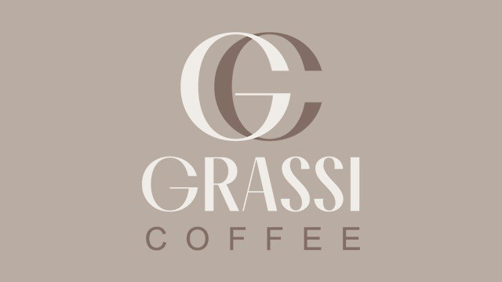

O cafenea de cartier construită în jurul unui singur principiu: cafea bună, preparată corect, pentru oricine.

Grassi Coffee a apărut pe Bulevardul Ștefan cel Mare și Sfânt din dorința de a aduce în Chișinău o cafenea unde calitatea boabelor contează la fel de mult ca atmosfera. Am pornit de la un meniu simplu, construit în jurul a 100% Arabica, și am extins constant gama cu băuturi de autor, matcha și smoothie-uri.
Astăzi avem trei locații în oraș și o echipă de bariști dedicați care pregătesc fiecare băutură la comandă — de la un espresso clasic, până la un Blue Spirulina Latte cu protein foam.
Găsește-ne pe hartăBoabe selecționate pentru un gust echilibrat, în fiecare ceașcă.
Lapte vegetal și fără lactoză, disponibile pentru orice băutură.
Protein foam, collagen și blue spirulina — energie cu beneficii reale.
Ștefan cel Mare și Sfânt 132, Albișoara 4 și Pușkin 28/3, în centrul Chișinăului.
Suntem deschiși în fiecare zi — vezi programul și direcțiile exacte.